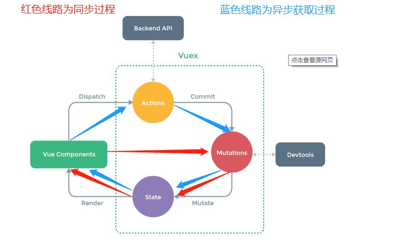
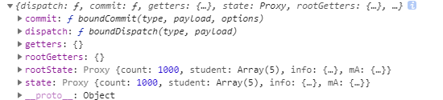
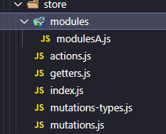

# Vuex 是做什么的？
官方解释：Vuex 是一个专为 Vuejs 应用程序开发的状态管理模式。
- 采用集中式存储管理应用的所有组件的状态，并以相应的规则保证状态以一种可预测的方式发生变化。
- Vuex 也集成到 Vue 的官方调试工具 devtools extension，提供了诸如零配置的 time-travel 调试、状态快照导入导出等高级调试功能。
状态管理到底是什么？
- 状态管理模式、集中式存储管理这些名词听起来就非常高大上，让人捉摸不透。
- 其实，你可以简单的将其看成把需要多个组件共享的变量全部存储在一个对象里面。
- 然后，将这个对象放在顶层的 Vue 实例中，让其他组件可以使用。
- 那么，多个组件是不是就可以共享这个对象中的所有变量属性了呢？
等等，如果是这样的话，为什么官方还要专门出一个插件 Vuex 呢？难道我们不能自己封装一个对象来管理吗？
- 当然可以，只是我们要先想想 Vue 带给我们最大的便利是什么呢？没错，就是响应式。
- 如果你自己封装实现一个对象能不能保证它里面所有的属性做到响应式呢？当然也可以，只是自己封装可能稍微麻烦一些。
- 不用怀疑，Vuex 就是为了提供这样一个在多个组件间共享状态的插件，用它就可以了。
# Vuex 状态管理图例

# Vuex 的使用
import Vue from 'vue' | |
import Vuex from 'vuex' | |
// 1. 安装插件 | |
Vue.use(Vuex) | |
// 2. 创建对象 | |
const store = new Vuex.Store({ | |
state: { | |
}, | |
mutations: { | |
}, | |
getters:{ | |
}, | |
actions: { | |
}, | |
modules: { | |
} | |
}) | |
// 3. 导出 store，然后在 main.js 中引入 | |
export default store |
# state
它就是我们要存的变量，需要去管理和所有组件公用的变量，里面可以放我们想要共享的属性
state: { | |
// 定义我们的属性 | |
count: 1000 | |
} |
组件中使用的方法
$store.state.count |
# mutations
我们管理图例可以看出来，官方推荐我们通过上面图的方式来进行对管理共享的变量进行操作，这样 Devtools 工具就可以监控到我们所有状态的变化了，简单使用如下
mutations: { | |
// 参数就是 state | |
increate(state){ | |
state.count++; | |
}, | |
decreate(state){ | |
state.count--; | |
} | |
} |
// 使用 | |
this.$store.commit("decreate"); | |
this.$store.commit("increate"); |
# mutations 第二个参数：传递参数
- 在通过 mutations 更新数据的时候，有可能我们希望携带一些额外的参数
- 参数被称为是 mutations 的载荷（Payload）
pushStu(state,param){ | |
state.student.push(param) | |
} |
const stu = {name:'wxf5',age:58} | |
// 普通提交风格 | |
this.$store.commit('pushStu',stu) |
# Mutations 提交风格
- 上面的通过 commit 进行提交是一种普通的方式
- Vue 还提供了另外一种风格，它是一个包含 type 属性的对象
//type 就是需要提交 mutations 中方法的名字，剩下的参数按顺序填写就行 | |
this.$store.commit({ | |
type: 'pushStu', | |
stu | |
}) |
// 此时 param 就是一个对象，我们可以从对象中在获取我们传入的值 | |
pushStu(state,param){ | |
state.student.push(param.stu) | |
} |
# Mutations 响应规则
Vuex 的 store 中的 state 是响应式的，当 state 中的数据发生改变时，Vue 组件会自动更新
这就要求我们必须遵守一些 Vuex 对应的规则：
- 提前在 store 中初始化好所需的属性。
- 口当给 state 中的对象添加新属性时，使用下面的方式：
方式一：使用 Vue.set（obj，'newProp，123）
方式二：用心对象给旧对象重新赋值
# 添加对象属性
state.info['sex'] = '男' // 给 info 对对象添加 sex 属性值为男 |
# 删除对象属性
delete state.info['sex'] // 删除 info 对象的 sex 属性 |
在 vue2.x 的时候如果我们在 mutations 中动态添加 state 中对象的属性的话，是做不到响应式的功能的，就是有操作但是页面并没有刷新数据，虽然 vue3.x 解决了这个问题，但是我们在使用 vue2.x 的时候我们还可以用一下方法
// 例如 | |
addInfoAttr(state){ | |
state.info['sex'] = '男' | |
} | |
// 调用 | |
this.$store.commit('addInfoAttr') | |
// 在 vue2.0 的时候这样调用页面是不会变化的，我们可以通过下 Vue.set (obj,'newProp',123) 方式，相当于把我们的值加入响应式系统中 | |
Vue.set(state.info,'sex','男') // 参数一 obj 把你的对象放进去，第二个参数属性名称，第三个参数属性值 | |
Vue.delete(state.info,'sex')// 参数一 obj 把你的对象放进去，第二个参数要删除的属性名称 |
# Mutations 常量的使用方法
抽取出一个 mutations-types.js
export const INCREATE = 'increate' // 导出我们对相应 mutations 方法的名字给我们指定常量 |
store 中 mutations 方法的使用
// 引入常量 js | |
import { INCREATE } from '../store/mutations-types' | |
// 方法改成如下这样 | |
[INCREATE](state){ | |
state.count++; | |
}, |
组件中使用提交
// 引入常量 js | |
import { INCREATE } from '../store/mutations-types' | |
// 使用 | |
this.$store.commit(INCREATE); | |
#### Mutations同步函数 | |
- 通常情况下，Vuex要求我们Mutation中的方法必须是同步方法. | |
- 主要的原因是当我们使用devtools时，devtools可以帮助我们捕捉mutation的快照. | |
- 但是如果是异步操作，那么devtools将不能很好的追踪这个操作什么时候会被完成 | |
### getters | |
类似计算属性 | |
```javascript | |
getters: { | |
// 参数 state | |
powerCount(state){ | |
return state.count * state.count | |
} | |
}, |
// 使用 | |
$store.getters.powerCount |
两个参数
// 第二个参数就是 getters | |
countLength(state,getters){ | |
return (getters.powerCount + '').length | |
} |
举个例子，定义 student 对象数组，过滤 28 以上的 student
state: { | |
count: 1000, | |
student:[ | |
{ | |
name: 'wxf1', | |
age: 18 | |
}, | |
{ | |
name: 'wxf1', | |
age: 28 | |
}, | |
{ | |
name: 'wxf1', | |
age: 38 | |
}, | |
{ | |
name: 'wxf1', | |
age: 48 | |
}, | |
] | |
}, |
geAgeStu(state){ | |
return state.student.filter(s => s.age > 28) | |
} |
但是假如说我们组件中指定年龄而不是写死在 getters 方法中，因为方法中只有两个参数，第一个 state，第二个 getters，所以我们可以通过回调函数来写
geAgeStuByAge(state){ | |
return age => { | |
return state.student.filter(s => s.age > age) | |
} | |
} |
返回一个函数，然后组件再调用的时候返回函数填入参数即可达到我们想要的效果。
# actions
# Action 的基本定义
- 我们强调，不要再 Mutation 中进行异步操作.
- 但是某些情况，我们确实希望在 Vuex 中进行一些异步操作，比如网络请求，必然是异步的。这个时候怎么处理呢？
- Action 类似于 Mutation，但是是用来代替 Mutation 进行异步操作的.
// 参数一 上下文对象相当于当前 store 参数二即相当于 mutations 中的传入参数 | |
// 模拟异步操作 | |
adUpdateInfo(context,payload){ | |
console.log(payload); | |
setTimeout(() => { | |
context.commit('updateINfo') | |
}, 1000); | |
} | |
// 使用 | |
this.$store.dispatch('adUpdateInfo','我是参数') |
// 异步请求组件获取响应结果 | |
adUpdateInfo(context, payload) { | |
return new Promise((resolve, reject) => { | |
setTimeout(() => { | |
context.commit('updateINfo') | |
console.log(payload); | |
resolve('结果成功！') | |
}, 1000); | |
}) | |
} | |
// 使用通过.then 获取成功响应 | |
this.$store.dispatch('adUpdateInfo','我是参数').then(res => { | |
console.log(res) // 结果成功！ | |
}) |
# modules
认识 Module
- Module 是模块的意思，为什么在 Vuex 中要使用模块呢？
- Vue 使用单一状态树，那么也意味着很多状态都会交给 Vuex 来管理.
- 当应用变得非常复杂时，store 对象就有可能变得相当随肿.
- 为了解决这个问题，Vuex 允许我们将 store 分割成模块（Module），而每个模块拥有自己的 state、mutation、action、getters 等
const mA = { | |
state: { | |
name: '' | |
}, | |
actions: {}, | |
getters: {}, | |
mutations: {} | |
} | |
{ | |
state: { | |
count: 1000 | |
}, | |
actions: {}, | |
getters: {}, | |
mutations: {}, | |
modules:{ | |
// 引入其他模块 | |
mA | |
} | |
} | |
// 使用其他模块中的 state | |
$store.mA.state.name = 'wxf' | |
//getters mutations 使用方法还是 commit dispatch | |
// 在模块中 getters 可以有第三个参数 rootState，也就是根的 state | |
fucn(state,getters,rootState){ | |
return rootState.count // 1000 | |
} | |
//actions 在模块中 | |
// 此时的 context 只能访问到该模块中的 mutations 方法 | |
adUpdateInfo(context,payload){ | |
console.log(payload); | |
setTimeout(() => { | |
context.commit('updateINfo') | |
}, 1000); | |
} |
我们打印 context 如下可以 获取根的 getters 和根的 state

官方推荐 store 目录结构及代码抽取
